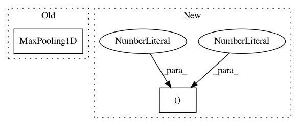

306ff550f0ad54c01f922963be16ef96a0e1bbda,donkey/predictors/keras.py,ConvolutionPredictor,create,#ConvolutionPredictor#Any#,25
Before Change
model.add(Convolution1D(32, 3))
model.add(Activation("relu"))
model.add(MaxPooling1D(2))
model.add(Convolution1D(64, 3))
model.add(Activation("relu"))
After Change
model.add(Convolution2D(12, 3, 3))
model.add(Activation("relu"))
model.add(MaxPooling2D(pool_size=(2, 2)))
model.add(Convolution2D(16, 3, 3))
model.add(Activation("relu"))
In pattern: SUPERPATTERN
Frequency: 3
Non-data size: 2
Instances
Project Name: autorope/donkeycar
Commit Name: 306ff550f0ad54c01f922963be16ef96a0e1bbda
Time: 2016-12-23
Author: wroscoe@gmail.com
File Name: donkey/predictors/keras.py
Class Name: ConvolutionPredictor
Method Name: create
Project Name: keras-team/keras
Commit Name: efe5916109e220a429a2cff110edb952d747466f
Time: 2016-04-01
Author: francois.chollet@gmail.com
File Name: tests/keras/layers/test_convolutional.py
Class Name:
Method Name: test_maxpooling_1d
Project Name: nl8590687/ASRT_SpeechRecognition
Commit Name: 5f73fe0599380479a37029de1d5647f33aae18c8
Time: 2017-09-04
Author: 3210346136@qq.com
File Name: main.py
Class Name: ModelSpeech
Method Name: CreateModel